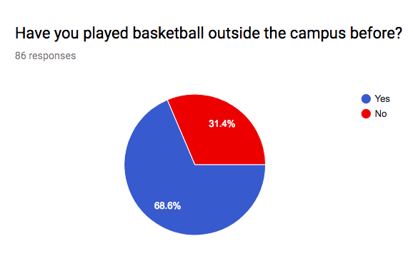

Why our website is needed?
 Nowadays, people play sports to maintain good health. Indeed, doing physical activities plays a vital role in our life. Therefore, in this website, we would like to help you develop your basketball skills. Developing basketball skills will let your shooting, dribbling, and rebounding skills become better. You could win a basketball tournament if you master those skills. Basketball could be part of your physical activities and also your recreational activity. Playing basketball could also help your diet be balanced. While practicing, you might meet someone else that likes basketball too, therefore, you could be friends with that person, this way can help you increase your socialize level. Personally, these are the reasons that inspired me to play basketball and also why we would like to create this website. Please enjoy our website!
Credit
Website By: Hong Wen and Alisa